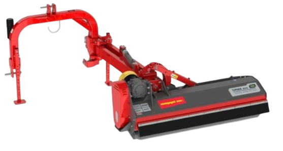
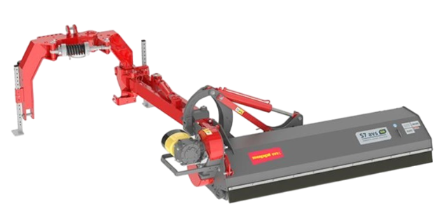
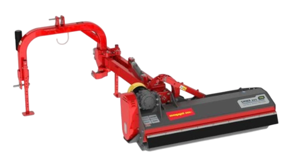

L7 Desplazable 80–160 CV
Más información
- Trituradora desplazable para tractores de 80–160 CV.
- Inclinación hidráulica de +90° a −65°.
- Desplazamiento lateral hidráulico de 99 cm.
- Tritura hierba y ramas hasta 7 cm Ø.
Tres soluciones para trabajos en cunetas, bordes, taludes y viñedos. Inclinación y desplazamiento hidráulicos para trabajar con seguridad y precisión.
Trabajo real en cunetas y taludes: precisión y seguridad.



¿No sabés cuál elegir? Contanos tu tractor, el terreno y el trabajo típico y te recomendamos el modelo óptimo.
Asesoramiento por WhatsApp